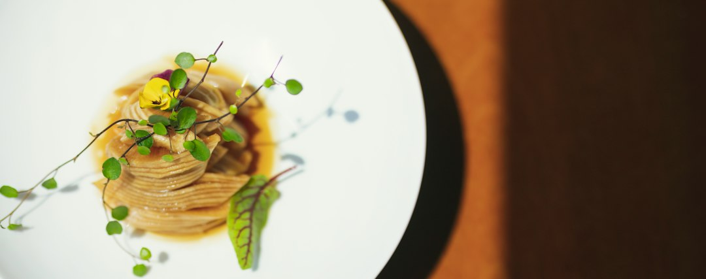

Ridurre Sprechi e Costi nella Ristorazione: La Soluzione Innovativa per Menu Digitali e Video 3D

Ridurre Sprechi di Tempo e Costi nella Ristorazione con Menu Digitali e Video 3D: Guida Essenziale per Ristoratori, Chef e Titolari
- Menu cartacei tradizionali non valorizzano i piatti e sono spesso ignorati.
- Comunicare la qualità sui social è difficile e videomaking è costoso.
- Locanda Digitale automatizza la digitalizzazione e crea contenuti video 3D per aumentare vendite e visibilità.
Analisi approfondita della notizia e delle implicazioni operative
Il mondo della ristorazione sta vivendo una trasformazione sempre più digitale, ma molte realtà come trattorie, pizzerie gourmet e agriturismi ancora si affidano a menu cartacei di solo testo, che spesso non catturano l'attenzione dei clienti né comunicano la qualità e l’unicità dei piatti offerti. Questo tradizionale approccio limita fortemente il potenziale di vendita e la fidelizzazione del cliente, specialmente in un mercato in cui la componente visiva e l'interazione digitale sono determinanti.
Parallelamente, la promozione sui social network è divenuta una componente imprescindibile per qualsiasi attività gastronomica che voglia crescere e distinguersi. Tuttavia, i costi di produzione di contenuti video professionali e coinvolgenti sono spesso proibitivi per molte aziende, creando un vero e proprio collo di bottiglia operativo che rallenta la comunicazione efficace della propria offerta.
Le conseguenze e i costi di non agire
Mantenere menu cartacei di solo testo implica sprechi di tempo e risorse economiche, oltre a essere poco efficace nello stimolare l'acquolina in bocca dei potenziali clienti. I menu statici e poco attrattivi vengono spesso ignorati, abbassando il valore percepito della proposta gastronomica.
Inoltre, senza una comunicazione visiva di qualità, queste attività perdono posizionamento competitivo sui social media, sacrificando opportunità di visibilità e acquisizione di nuovi consumatori. Soprattutto, affidarsi ai servizi tradizionali di videomaking comporta spesso costi elevati e tempi lunghi, che decurtano margini e rallentano le strategie di marketing operativa.
Il rischio più grande per ristoratori e chef è vedere eroso il proprio mercato a favore di competitor più digitalizzati e agili, creando una spirale di inefficienza e perdita di ricavi legata proprio alla gestione obsoleta della comunicazione e alla lentezza operativa nella gestione quotidiana.
Come Locanda Digitale risolve il problema
Locanda Digitale di RM Studio si presenta come una suite AI all'avanguardia studiata specificamente per la ristorazione, capace di eliminare sprechi, semplificare la gestione e promuovere efficacemente l’attività sia a tavola che online.
Attraverso un processo automatico e intuitivo, Locanda Digitale consente di creare video spot 3D verticali (formato 9:16 a 60 FPS) partendo da semplici foto reali dei piatti, senza necessità di servizi costosi di videomaker. Questi video sono perfetti per le campagne social, aumentando visibilità, engagement e conversioni.
Parallelamente, la digitalizzazione del menu cartaceo diventa semplice e funzionale: Locanda Digitale trasforma i vecchi menu in menu digitali completi di fotografie in alta definizione, con l’aggiunta di QR Code personalizzati da posizionare direttamente al tavolo. Questo strumento aumenta sensibilmente l’esperienza cliente, rendendo l’ordine più rapido, puntuale e coinvolgente.
Il tutto viene offerto senza abbonamenti costosi, con due soluzioni flessibili: Social 3D Starter a €79 una tantum, ideale per chi vuole iniziare a potenziare la comunicazione video; e Visual Menu Pro a €149 per una digitalizzazione completa, pratica e scalabile del menu. Un investimento contenuto che genera rapidamente risparmi in gestione e aumenta fatturato.
| Gestione Tradizionale | Con Locanda Digitale |
|---|---|
| Menu cartacei statici e poco attraenti | Menu digitali con fotografie HD e QR Code interattivi |
| Costi elevati per videomaker professionisti | Video 3D verticali creati automaticamente con AI a costi contenuti |
| Tempi lunghi nella produzione e aggiornamento del materiale promozionale | Aggiornamenti rapidi e gestione autonoma dei contenuti |
| Difficoltà nella comunicazione efficace su social media | Contenuti social ad alto impatto visivo e coinvolgimento immediato |
| Spreco di tempo e risorse nell’operatività quotidiana | Automazione e ottimizzazione dei processi di marketing e gestione menu |
💡 Ti è stato utile questo approfondimento?
Condividilo con un collega o un amico del settore Ristoratori, Chef, Titolari di Trattorie, Pizzerie Gourmet e Agriturismi a cui potrebbe interessare!
FAQ - Domande frequenti per ristoratori e titolari
D: Quali sono i vantaggi principali nell’usare Locanda Digitale rispetto ai menu tradizionali?
R: Principalmente maggiore coinvolgimento visivo, velocità di aggiornamento, risparmio sui costi di produzione di contenuti e migliore esperienza per il cliente che si riflette in un aumento delle vendite.
D: Qual è il tempo medio per creare un video 3D con Locanda Digitale a partire da foto esistenti?
R: Il processo è automatizzato e può completarsi in pochi minuti, senza la necessità di attrezzature complesse o competenze di editing video.
D: Ci sono costi ricorrenti o abbonamenti da sostenere per l’utilizzo della suite Locanda Digitale?
R: No, l’offerta prevede un unico pagamento una tantum senza costi nascosti o abbonamenti, il che rende l’investimento estremamente conveniente per strutture di ogni dimensione.
Inizia Subito
Social 3D Starter a €79 una tantum o Visual Menu Pro a €149. Nessun abbonamento.
Fonti Ufficiali e Risorse Esterne
Scopri l'Intelligenza Artificiale per la tua attività
Ottimizza i processi e aumenta le vendite con le soluzioni B2B di RM Studio.
Scopri Locanda Digitale